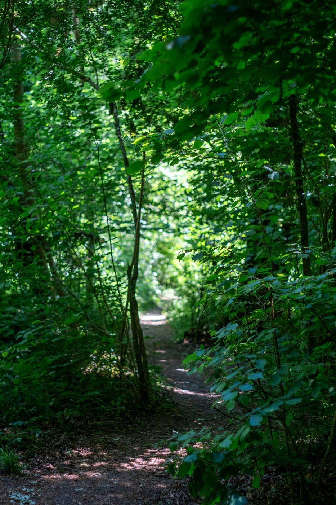

THE PATH()

Keep scrolling
Behind the walk
정해진 목적지 없이 걷다 보면 발밑의 길이 스스로 방향을 정해 주는 것 같습니다. 나무 그늘이 짙어지는 곳, 길이 살짝 굽어지는 곳에서 자주 걸음을 멈추게 됩니다.
포장된 길도, 흙길도 걸어 봤습니다. 어느 쪽이든 한 걸음씩 나아가는 감각은 비슷했어요. 사진에 담긴 길들은 대부분 사람이 드문 시간에 만난 것들입니다.
02 — 03길 위에서
길이 굽어지는 곳에 다다르면 그 너머가 궁금해져 한 걸음 더 걷게 됩니다.
Contact Sheet(5)
01 / 05
What I keep
(What I Look For)
NOTICE WHAT'S
EASY TO
WALK PAST
특별할 것 없는 하루의 산책에서도, 잠깐 멈춰 서면 보이는 것들이 있습니다.
빛이 스며드는 각도, 구름이 움직이는 속도, 손끝에 닿는 온도 같은 것들이요.
(01)
 (03)
(03)
(Still Walking)
ONE STEP,
THEN ANOTHER
거창한 계획 없이 그저 걷다 보면, 카메라를 꺼내고 싶어지는 순간이 옵니다. 이 기록은 그 순간들을 이어 붙인 것입니다.